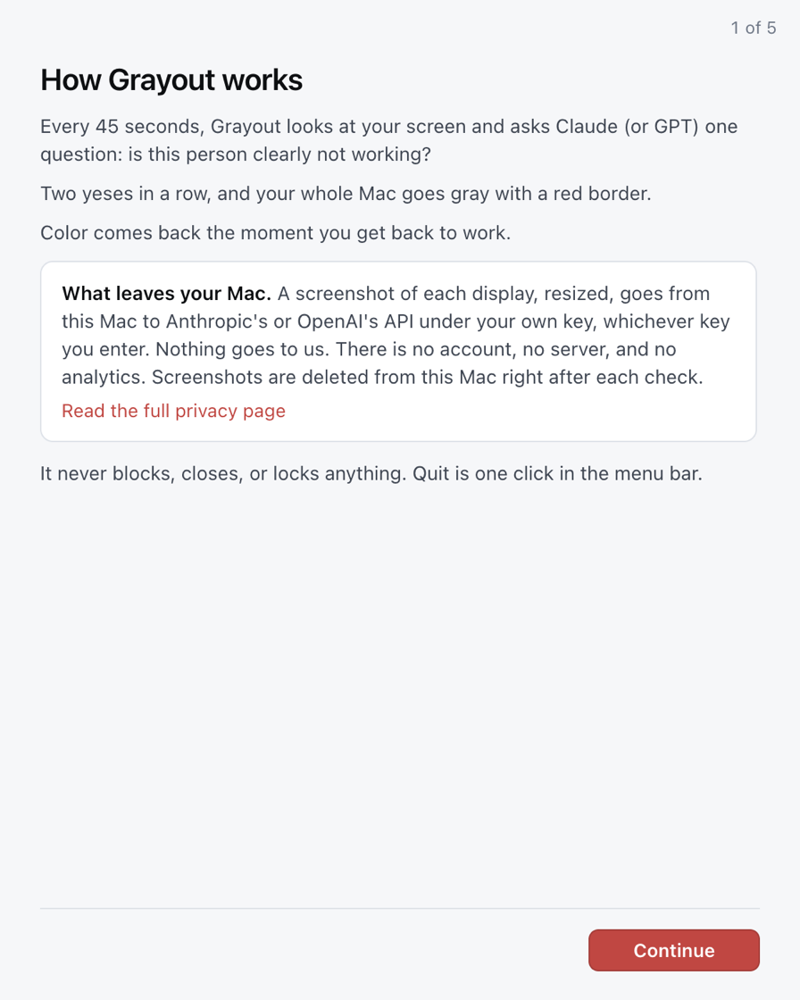

Install Grayout
About three minutes. Grayout is not notarized yet, so macOS warns you once on first launch; steps 2 and 3 get you past that. The wording below is from macOS 26.
macOS 13 (Ventura) or later. Not sure which one? Apple menu > About This Mac. “Chip: Apple M…” means Apple Silicon.
Homebrew, if you use it
One command installs the same build, and brew upgrade keeps it current afterwards:
brew install --cask aarushkandukoori/tap/grayoutmacOS still treats it as a downloaded app, so carry on at step 2 below. Everything else on this page applies unchanged.
1. Download and drag
Open the DMG, drag Grayout onto the Applications folder, then eject the disk image. It must be in Applications for the Open Anyway exception and Start at login to work.
2. First launch
Double-click Grayout in Applications. macOS shows:
Apple could not verify “Grayout” is free of malware that may harm your Mac or compromise your privacy.
with the buttons Done and Move to Trash. Click Done. (Control-click > Open no longer bypasses this on macOS 15 and 26.)
3. Allow it
Open System Settings > Privacy & Security and scroll down to the Security section. You’ll see “Grayout” was blocked to protect your Mac. Click Open Anyway, enter your password or use Touch ID, then click Open Anyway (or Open) in the dialog that follows. macOS remembers this.
Some guides report the Open Anyway button disappears about an hour after the blocked attempt; if you don’t see it, double-click Grayout again and come back.
Terminal alternative that skips the dialog:
xattr -dr com.apple.quarantine /Applications/Grayout.appWhy this happens: removing this warning requires Apple’s $99/year Developer Program and notarization. That is the first thing on the roadmap.
4. Screen Recording

Grayout opens a welcome window. On step 2 click Open System Settings, turn on Grayout under Screen Recording, then click Relaunch Grayout. macOS only applies this permission after the app restarts.
Grayout asks for nothing else: no Accessibility, no Automation, no Full Disk Access. The camera is optional and off by default.
5. Start watching
Step 3: choose how you want to run it. You can take 100 checks with no card and no account, or subscribe, which opens Stripe’s checkout page in your browser after you pick a plan on the pricing page. Grayout then claims the license itself within a few seconds: there is no key to copy and no password to make. If you already have a license key, the same screen takes it.
There is no API key to create. Grayout makes the model calls on its own account, so nothing of yours goes to Anthropic or OpenAI directly. The license key is stored encrypted on your Mac and is the only credential the app holds.
6. Done
Step 5: click Preview the gray to see what it does and to prove the restore path on your Mac, then Start watching. The first check runs within seconds. Grayout lives in the menu bar; there is no Dock icon.
7. Verify your download
Each release carries a SHA256SUMS.txt. Compare it with your file:
shasum -a 256 ~/Downloads/Grayout-arm64.dmgUse Grayout-x64.dmg for the Intel build. The two hashes must match exactly.
8. Build from source
git clone https://github.com/aarushkandukoori/grayout && cd grayout && npm ci && npm run helper && npm startNeeds Node 22 and the Xcode Command Line Tools for clang, which compiles the 30-line grayscale helper. npm run dist builds the DMGs.
9. Updating
Download the new DMG, drag Grayout over the old app, relaunch. Grayout checks GitHub once a day and shows Update available in its menu when there is one; you can turn that off in Settings.
macOS may ask for Screen Recording again after an update. If the toggle is on but captures are blank, use Permissions > Copy the fix command and paste it in Terminal:
tccutil reset ScreenCapture com.aarushkandukoori.grayout10. If your screen is stuck gray
In order, from the easiest:
- Click Restore color now in the Grayout menu bar item. It is enabled in every state, including paused and blocked.
- Click I’m working if the item is there: color returns and Grayout backs off for ten minutes.
- Quit Grayout, or relaunch it. Quitting restores color on the way out, and every launch turns grayscale off before anything else runs, even after a force-kill.
- Paste this in Terminal, with the quotes:
"/Applications/Grayout.app/Contents/Resources/helper/grayscale" off - No Terminal: System Settings > Accessibility > Display > Color Filters, and turn it off. That is the exact switch Grayout uses, so this always works.
- Do nothing: a watchdog restores color after 20 minutes no matter what.
If any of these was needed, open an issue and say which one worked.